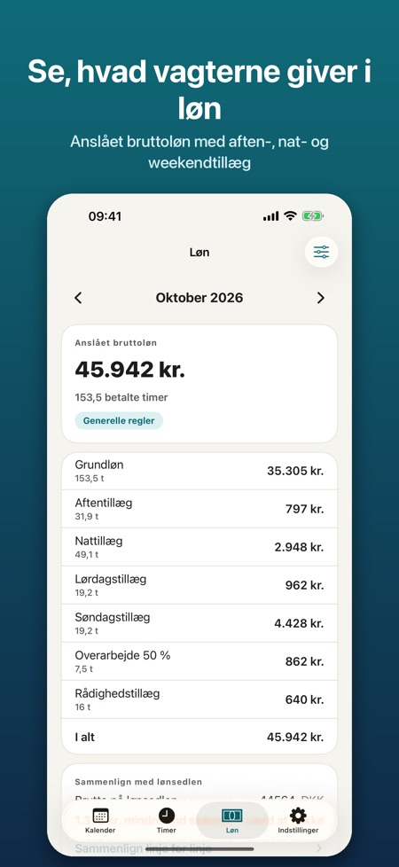
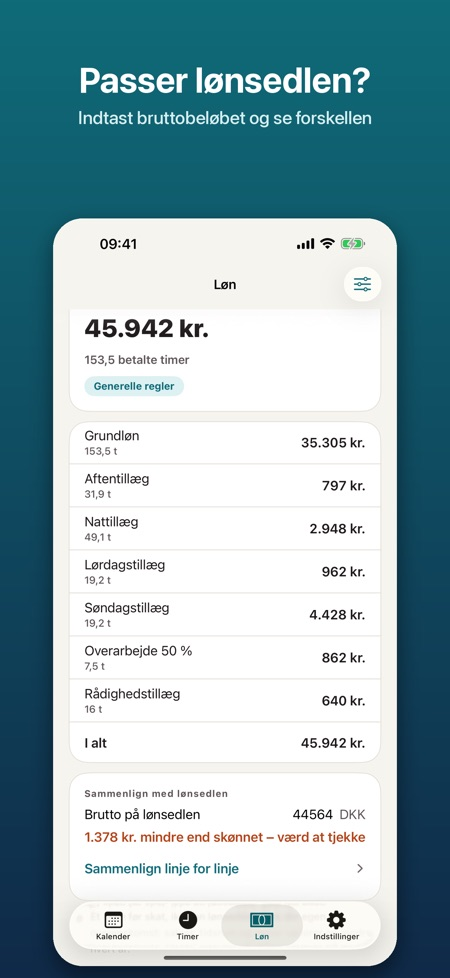
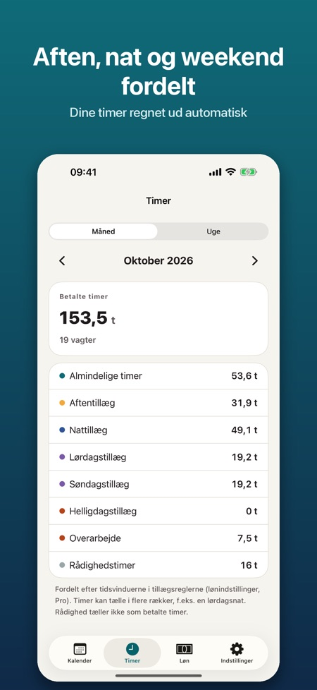

Vagtplan er lavet til dig, der arbejder i skiftende vagter. Planlæg vagterne, se dine timer og tjek, at lønsedlen passer.



Til sygeplejersker, SOSU'er, politi, butik, hotel og restaurant, lager og studerende med studiejob.
Ja, rulleplaner på 1–8 uger, sat ind op til to år frem.
Ja, timer pr. uge og måned fordelt på almindelige timer, aften, nat, lørdag, søndag, helligdag, overarbejde og rådighed.
Med Pro får du en anslået bruttoløn pr. måned med tillæg, du selv sætter op. Det er et skøn før skat, ikke en lønseddel.
Nej. Skabelonerne har navnene på tillæggene, men du indtaster tallene fra din egen overenskomst.
Pro fås som årsabonnement eller som engangskøb for altid.
Nej, ingen konto og ingen reklamer. Alt gemmes på telefonen og virker uden internet.
Vagtplan er lavet til dig, der arbejder i skiftende vagter: sygeplejersker, SOSU'er, politi, butik, hotel og restaurant, lager og studerende med studiejob. Planlæg vagterne, se dine timer og tjek, at lønsedlen passer.
KALENDER OG RULLEPLAN
• Egne vagttyper med farve, start- og sluttid og ubetalt pause (dag, aften, nat, langvagt, rådighed, fri)
• Måneds- og ugevisning: vælg en vagt og tryk på dagene for at sætte den ind
• Rulleplan på 1–8 uger, sat ind op til to år frem
• Kopiér en uge, byt vagter mellem to dage, tilføj noter og overarbejde
• Helligdage i Danmark, Norge og Finland beregnes i appen (også påske, Kristi himmelfart og pinse)
• Påmindelse før vagten
TIMER
• Timer pr. uge og måned, fordelt på almindelige timer, aften, nat, lørdag, søndag, helligdag, overarbejde og rådighed
• Vagter over midnat og skift til sommertid/vintertid regnes rigtigt
VAGTPLAN PRO
• Anslået bruttoløn pr. måned med en oversigt, du kan sammenligne med lønsedlen
• Indtast bruttobeløbet fra lønsedlen og se forskellen til skønnet
• Timeløn eller månedsløn og tillæg, du selv sætter op: kr. pr. time eller % af timelønnen, med tidsrum og ugedage
• Overarbejde 50 % og 100 %, pr. dag eller efter et antal timer pr. vagt
• Skabeloner med navnene på tillæggene i almindelige overenskomster (regioner og kommuner, KS og Spekter i Norge, Sote og KVTES i Finland). Satserne er ikke lagt ind: du indtaster tallene fra din egen overenskomst
• Eksport til Apple Kalender, som .ics-fil eller som billede
• Widget med næste vagt og timer denne måned
Pro fås som årsabonnement eller som engangskøb for altid. Årsabonnementet fornyes automatisk, indtil du opsiger det i dine Apple-id-indstillinger, senest 24 timer før perioden udløber.
Ingen konto, ingen reklamer. Alt gemmes på telefonen og virker uden internet.
Lønnen er et skøn før skat, ikke en lønseddel. Appen er uafhængig og ikke tilknyttet nogen arbejdsgiver, fagforening, arbejdsgiverorganisation eller myndighed.